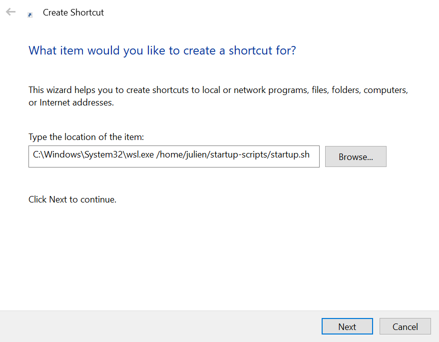

I recently decided to automate part of my new workflow using the company's Windows laptop. After a short battle with Windows' native tool to schedule tasks and services, I decided that it'd be simpler to use the Linux tools I know inside WSL (i.e. Ubuntu on Windows). To schedule tasks on Linux, we can use cron and I decided to use it on windows too. Here's how I managed to execute a bash script at login to start cron and other services that I need inside WSL. How to execute a WSL script at login To execute a script inside WSL when you log into your Windows session, it suffices to add a shortcut inside the startup folder. In my computer, the startup folder is located at (replace <user name> with you user name): C:\Users\<user name>\AppData\Roaming\Microsoft\Windows\Start Menu\Programs\Startup You can also access it directly by opening the run app (type the windows key on your keyboard then type run) and then typing shell:startup inside the run prompt. In the startup directory, right click and choose new > Shortcut. Then, it's just a matter of choosing the wsl.exe executable (located at C:\Windows\System32\wsl.exe on my computer) with the proper arguments. To run the script located at ~/startup-scripts/startup.sh inside WSL filesystem, I entered this line in the prompt: C:\Windows\System32\wsl.exe /home/julien/startup-scripts/startup.sh Here's a screenshot for clarity.  Here's the content of my startup.sh script: startup.sh #!/bin/bash { echo "$(date)" eval $(ssh-agent -s) sudo /etc/init.d/cron start } > /home/julien/startup-scripts/last_startup.log 2>&1 The block within curly braces : { ... } > /home/julien/startup-scripts/last_startup.log 2>&1 Allows to redirect both stdout and stderr of the commands within the curly braces to the file /home/julien/startup-scripts/last_startup.log. Inside this block : echo "$(date)" prints the current date eval $(ssh-agent -s) starts the ssh-agent daemon sudo /etc/init.d/cron start starts the cron service that we'll use to schedule tasks. Before we can execute this script, we need to enable cron inside WSL. How to enable cron in WSL cron is a time-based job scheduler. You can use it to run a program at a given time, such as every day or every minutes. If like me you use Ubuntu on Windows, you can install cron with: sudo apt install cron To be able to start cron in the startup script, we need to be able to use sudo without a password prompt. To this aim, edit the /etc/sudoers file using this command: sudo visudo and append this line: /etc/sudoers %sudo ALL=NOPASSWD: /etc/init.d/cron start How to schedule tasks using cron The crontab Assuming cron is started, we can then schedule jobs by editing the file in which cron looks for tasks to run, the crontab. Run this command to edit it: crontab -e The syntax to add a task in the crontab is as follows: minute hour day month weekday command For instance, this line will run script.sh the 3rd of April (04.03) at 2h01 : 1 2 3 4 * /path/to/script.sh While this line will run script.sh the 3rd of every month (*.03), at 2h01: 1 2 3 * * /path/to/script.sh Here is a non-exhaustive reference of values allowed for each field: field allowed values meaning minute 0-59, * the minute hour 0-23, * the hour day 1-31, * the day of month month 1-12, * the month weekday 0-6, * the day of week (monday, etc.) The website crontab.guru is great for finding how to write a specific line. A trick to handle logging Tasks scheduled by cron are responsible for their own logging, this means that there is no default location where you can see the output of a task run by cron. I like to tackle this issue by creating a file where I put the logs of every tasks. For instance, here's my current crontab: crontab -e 0 0 * * 0 echo "Erasing logs $(date) > /home/julien/cron.log 2>&1 0 * * * * /path/to/script.sh >> /home/julien/cron.log 2>&1 The first line schedules a task every Monday at 0h0mn to erase the log file with the current date. The second line schedules script.sh every minutes. For both tasks, stdout and stderr are redirected to /home/julien/cron.log. Note the different redirection types: the first line uses > which means erase the file while the second uses >> which means append to the file.
Other articles you might like: Keyboard shortcut and command line utility to switch display (Windows) Using WSL-2 as a dev environment The Moore-Penrose (pseudo-inverse) matrix